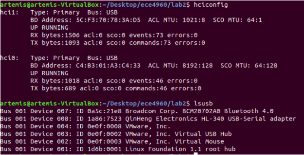
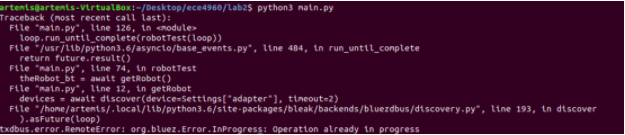
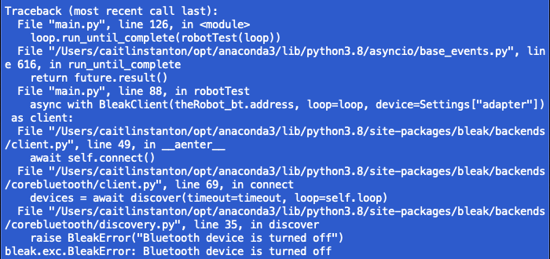
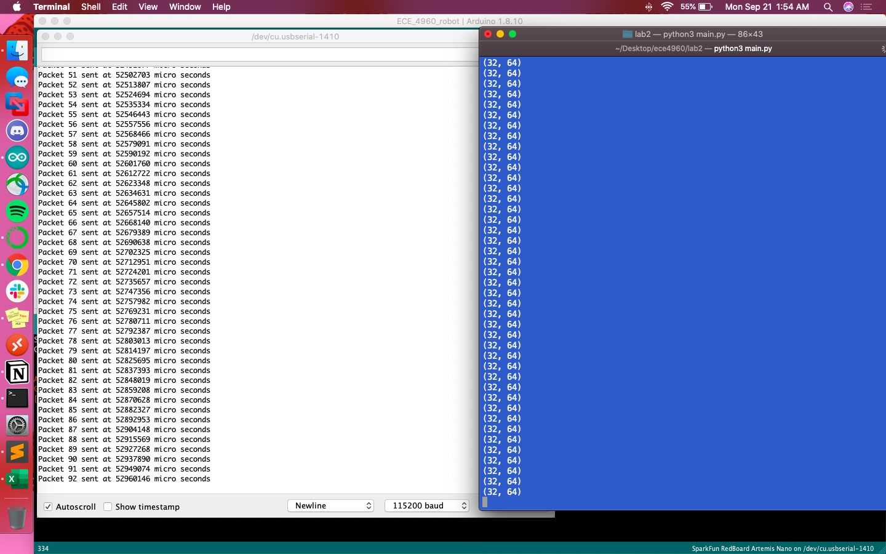
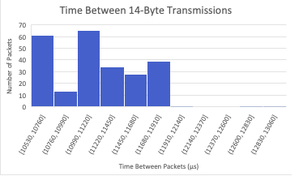
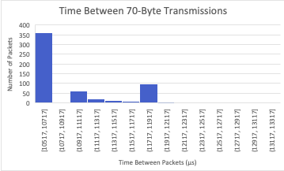

Lab 2
Bluetooth
After starting basic work with the Nano last week, this lab introduced us to enabling Bluetooth connections on the Artemis. This not only involved establishing the connection but also testing its limits of data transmission.
Much like in Lab #1, this lab was off to a rocky start. Uploading the code to the Artemis board wasn’t a problem, but connecting via Bluetooth proved to be more difficult. Originally I attempted to connect via the VM, making sure that both the Bluetooth adapter and the QinHeng adapter (for the CH430 driver on the Nano) were connected with Linux. Running hciconfig showed that the Bluetooth adapter was and lsusb showed that both devices were connected
Despite this, running python3 main.py failed to establish a connection, providing the following error consistently. This happened even after restarting the VM, reuploading code to the Nano, and using different combinations of USB ports on my laptop.
I made the choice to switch to my Mac, which ended up being successful. I had to make sure Bluetooth was enabled on my computer (or else Bleak would throw an error that the Bluetooth device was turned off).
After running main.py over a few dozen times, it finally recognized a UUID of 0EEEB402-2AC5-4904-BAFA-925974A4CBA1. I added this to settings.py, which made the connection slightly more reliable (meaning I would only have to run main.py once or twice to establish a connection).
The onboard LED blinked slowly and main.py printed nothing to the terminal, further ensuring that the connection was made.
Within main.py, I adjusted the function myRobtTasks() to send a ping to my robot board. All this entailed was commenting out pass and uncommenting await theRobot.ping(). Running main.py outputting a stream of pings to the terminal. To estimate the round-trip latency, I copied 80 of these pings and plotted them below:
Most pings (around 45) had a round-trip time ranging from 0.19 to 0.23 microseconds. The range was from 0.14 to 0.55 microseconds, with the mean equal to 0.221248046 microseconds.
To send floats across the Bluetooth connection, I commented out await theRobot.ping() from the previous step and uncommented await theRobot.sendCommand(Commands.REQ_FLOAT). From there, the REQ_FLOAT case in ECE_4960_robot.ino needed to be fleshed out:
case REQ_FLOAT:
Serial.println("Going to send a float");
res_cmd->command_type = GIVE_FLOAT;
res_cmd->length=6;
((float *)(res_cmd->data))[0] = 3.14f; //put a float into data to send
amdtpsSendData((uint8_t *)res_cmd, 6);
Once this code was uploaded to the Nano, running main.py produced the following:
It’s interesting to note that the float hardcoded was 3.14, whereas the float actually sent was 3.140000104904175. Though the difference is slight, it does illustrate that Bluetooth isn’t the most reliable data transmission.
So as to get more of a feel for the rate and reliability of wireless data transfer, I added to the code within the if(bytestream_active) condition to send 32-bit (4 byte) and 64-bit (8 byte) values. Within the .ino file I added the following code, which sent a 14-byte packet:
if (bytestream_active) {
res_cmd->command_type = BYTESTREAM_TX;
res_cmd->length = 14;
((uint32_t *)(res_cmd->data))[0] = 32;
uint64_t num = 64;
memcpy(res_cmd->data+4, &num, 8);
amdtpsSendData((uint8_t *)res_cmd, 14);
unsigned long t = micros();
Serial.printf("Packet %d sent at %d micro seconds \n", packet_count, t);
packet_count++;
}
Other additions to the .ino file included setting bytestream_active to 1 in the START_BYTESTREAM_TX case and initializing a global variable called packet_count to keep track of the number of packets. await theRobot.sendCommand(Commands.START_BYTESTREAM_TX) was added as a command to myRobotTasks, with all other commands commented out. For better printing in the terminal, within simpleHandler() in main.py I added (where "Iq" was used for the 4-byte case and "Iqqqqqqqq" for the 70-byte case):
if (code == Commands.BYTESTREAM_TX.value):
print(unpack("Iqqqqqqqq", data))
The packet number and time (in microseconds) at which it was sent was printed within the serial monitor. The terminal, where main.py was running, printed the packet values as they were sent. When comparing the two datasets, only around 71.5% of the packets were actually sent, resulting in a drop rate of 38.5%.
I also sent packets of 70 bytes, where the drop rate nearly doubled to 64.6%. The serial monitor and terminal looked relatively similar, except that each packet sent consisted of more values.
Histograms of both the 14-byte and 70-byte transmissions are below:
 For the 14-byte transmissions, it took an average of 11176.60905 microseconds between packets, whereas for the 70-byte transmissions the average was 10908.43739 microseconds.
Within the context of a smaller robot that we’ll be building, a Bluetooth connection is a lightweight data transmission system. However, there are pros and cons to consider with regards to its reliability and speed.